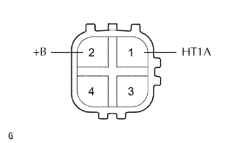

CẢM BIẾN ÔXY CÓ BỘ SẤY > KIỂM TRA
Xem Phần Chuẩn Bị
Kích chuột vào đây
1. KIỂM TRA CẢM BIẾN ÔXY CÓ SẤY (cho Thân máy 1 Cảm biến 1)

Đo điện trở giữa các cực 1 (HT1A) và 2 (+B) của cảm biến.
Điện trở tiêu chuẩn:
5 đến 10 Ω ở 20°C (68°F)
Nếu kết quả không như tiêu chuẩn, hãy thay thế cảm biến ôxy có sấy.